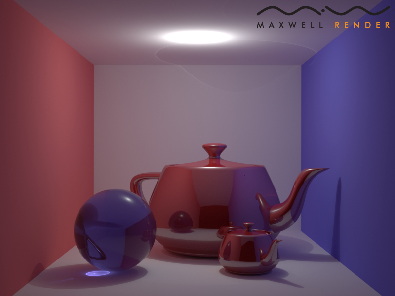
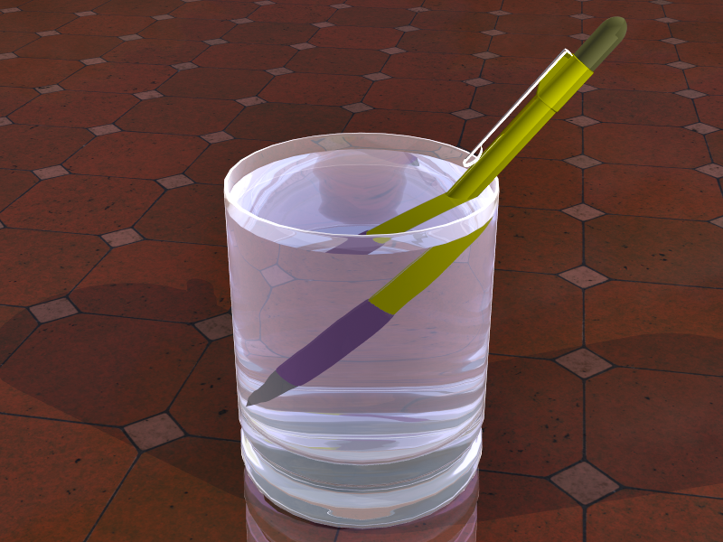
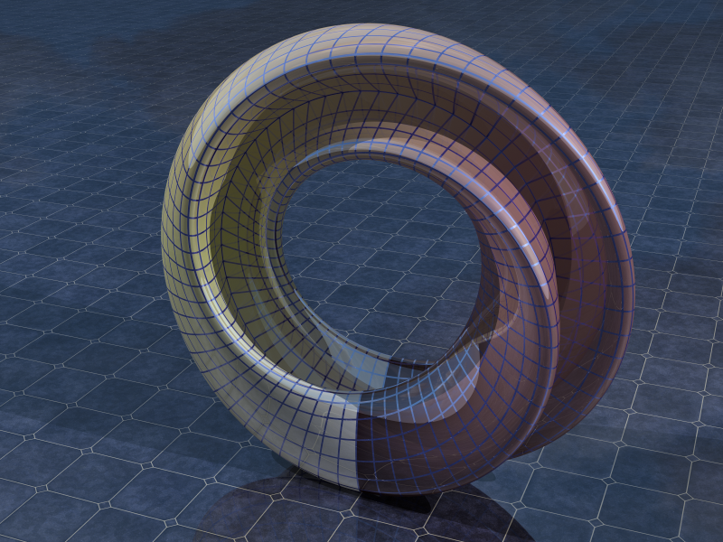

Project 6: space partitioning
The same as before, only now using a BVH to increase the speed of finding ray/object intersections. With the BVH the render time was 102 s using 64 threads on 2 cores @ 2.8GHz on my Macbook Pro 2008, using a single sample per pixel and allowing 100 bounces. Without the BVH the render time was 1,309 s.
{kind=link}
The image below was rendered with 128 low-distortion samples and allowed 32 bounces. The render time was 3.3 minutes using 64 threads on 32 cores @ 2.7 GHz Linux x64. This image uses my own OBJ of the teapot which has a more refined mesh (50x50 divisions per Bezier patch).
{kind=link}
For comparison, I rendered the scene with the commercial ray tracer Maxwell Render. I tried to replicate the scene exactly, but there are differences in material and light properties.
|  |
{kind=link}
Mechanical pencil in a glass of water. This is the scene that motivated me to implement ray tracing for overlapping geometry. We assign each object a priority. If two objects overlap, the higher priority object is rendered.
|  |
{kind=link}
The figure 8 Klein bottle. I have started using spherical environment maps in my scenes. If you look closely you can see large clouds reflected in the ground. I have also started exporting my images as HDR and using tonemapping to get really nice results.
|  |
{kind=link}
I tried to make a mythical forrest scene. I've linked a 1600x1200 version.
{kind=link}
index, previous, next, CS6620 - Ray Tracing for Graphics